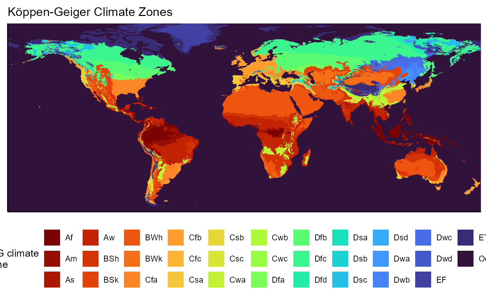

Setup for regional-scale MaxEnt models
Samuel M. Owens1
2024-10-07
Source:vignettes/060_setup_regional_MaxEnt_models.Rmd
060_setup_regional_MaxEnt_models.RmdOverview
In the previous vignette, I ran the global model, which was the first step to examine suitability for SLF at multiple spatial scales. In this vignette, I will set up to run three regional-scale models, one for each geographical region where SLF is found. I will run a model based on SLF presence data from the native range (China), the invaded region in Asia (Japan and South Korea), and the invaded region in North America. I hypothesize that by creating models at multiple spatial scales, I can have more confidence in suitability predictions made for specific SLF populations and important viticultural regions, and can predict the risk of specific populations spreading now and under climate change. I also hypothesize that the regional-scale models, once ensembled into a single prediction, will make more refined predictions than a global-scale model could.
This vignette will set up for these regional-scale models in a similar fashion to the setup I created for the global model in vignette 040, but with some additional steps. First, I will use geopolitical boundaries or bounding boxes to select a broad area for each regional model’s background points. I will choose a much broader area than SLF currently occupies in each area so that I can further reduce this area based on climate. I will then narrow this area for each model using the Koppen-Geiger climate zones. If a presence point within each region intersects with a zone, that zone will be included in the area used to choose background points.
For each regional-scale model, I will:
- Select the countries or bounding box that will represent that regional-scale model area
- Select the SLF presences that fall into that region. These will be used to train the model.
- Intersect these SLF presences with the K-G climate zones
- Keep the zones that intersect, combine their area and use this area to crop the bioclim layers we tidied in vignette 020
- Use the masked bioclim layers to select the background points
- Choose the test/validation presences, which will come from a different region than the training points
- Plot the chosen training and test presence per model.
Here is a table summarizing the model structures:
Setup
I will prepare for this vignette by loading the necessary packages to run this script. I will also be creating maps during this analysis, so I will create a list object containing a standardized map style that I will continue to use.
# general tools
library(tidyverse) #data manipulation
library(here) #making directory pathways easier on different instances
# here() starts at the root folder of this package.
library(devtools)
library(dismo) # generate random background points
# spatial data handling
library(raster)
library(terra)
library(sf)
# spatial data sources
library(rnaturalearth)
library(rnaturalearthhires)
library(kgc) # koppen climate rasters
# aesthetics
library(webshot)
library(webshot2)
library(kableExtra)
library(patchwork)Note: I will be setting the global options of this
document so that only certain code chunks are rendered in the final
.html file. I will set the eval = FALSE so that none of the
code is re-run (preventing files from being overwritten during knitting)
and will simply overwrite this in chunks with plots.
map_style <- list(
xlab("longitude"),
ylab("latitude"),
theme_classic(),
theme(panel.background = element_rect(fill = "lightblue2",
colour = "lightblue2")
),
scale_x_continuous(expand = c(0, 0)),
scale_y_continuous(expand = c(0, 0)),
coord_sf()
)Download countries shapefile
I will need a shapefile of world countries for parts of this
analysis, which I will retrieve from naturalearthdata using
their R package called rnaturalearth.
# check which types of data are available
# these are in the rnaturalearth package
data(df_layers_cultural)
# I will use states_provinces
# get metadata
ne_metadata <- ne_find_vector_data(
scale = 10,
category = "cultural",
getmeta = TRUE
) %>%
dplyr::filter(layer == "admin_0_countries")
# URL to open metadata
utils::browseURL(ne_metadata[, 3])
# if the file isnt already downloaded, download it
if (!file.exists(file.path(here::here(), "data-raw", "ne_countries", "ne_10m_admin_0_countries.shp"))) {
countries_sf <- rnaturalearth::ne_download(
scale = 10, # highest resolution
type = "admin_0_countries", # states and provinces
category = "cultural",
destdir = file.path(here::here(), "data-raw", "ne_countries"),
load = TRUE, # load into environment
returnclass = "sf" # shapefile
)
# else, just import
} else {
countries_sf <- sf::read_sf(dsn = file.path(here::here(), "data-raw", "ne_countries", "ne_10m_admin_0_countries.shp"))
}1. Retrieve K-G climate zones
First, I will use the kgc package to retrieve a global raster of the Koppen-Geiger climate zones.
I need to set up a path to my directory and the necessary bioclimatic raster layers.
# lists of target files in the directory
# load in bioclim layers to be cropped- the 10km .asc files
env.files <- list.files(path = file.path(mypath, "historical_climate_rasters", "chelsa2.1_30arcsec", "v1_maxent_10km"), pattern = "\\.asc$", full.names = TRUE) %>%
# extract the 4 bioclim layers I will be using in my models.
grep("atc_2015_global.asc|bio2_1981-2010_global.asc|bio11_1981-2010_global.asc|bio12_1981-2010_global.asc|bio15_1981-2010_global.asc", ., value = TRUE)Now I will download the Koppen-Geiger climate zones, which I will use to clip the bioclim layers.
# get data
kmz_data <- kgc::kmz
# generate coordinates
kmz_lat <- kgc::genCoords(latlon = "lat", full = TRUE)
kmz_lon <- kgc::genCoords(latlon = "lon", full = TRUE)
# join data and coordinates
kmz_data <- cbind(kmz_lat, kmz_lon) %>%
cbind(., kmz_data) %>%
as.data.frame() %>%
# relocate column
dplyr::select(kmz_lon, everything())
# convert to raster
kmz_data_rast <- terra::rast(
x = kmz_data,
type = "xyz",
crs = "EPSG:4326"
)
# change name of layer
names(kmz_data_rast) <- "Koeppen_climate_zone"
# validity- minmax should range between 0-32
minmax(kmz_data_rast)
# retrieve names of zones
kmz_names <- kgc::getZone(1:32)
# create naming object for later
kmz_names_labels <- kmz_names %>%
as.data.frame() %>%
dplyr::rename("zone_name" = ".") %>%
dplyr::mutate(zone_number = 1:32)
# this naming object will be used for the KG climate map
kmz_names_factor <- factor(
x = kmz_names,
levels = unique(kmz_names),
ordered = TRUE
)I will need to tidy these data by aggregating them to spatial scale I use for the bioclim variables. I will do this using the mode, because this variable is a set of numbers representing a categorical, so I do not want to average or take the median.
# layer used to aggregate raster
agg_layer <- terra::rast(file.path(mypath, "historical_climate_rasters", "chelsa2.1_30arcsec", "v1_maxent_10km", "atc_2015_global.asc"))
# raster stats
terra::origin(agg_layer)
terra::crs(agg_layer)
# resample
koppen_zones_rast <- terra::resample(
x = kmz_data_rast,
y = agg_layer, # aggregate to this origin and resolution
method = "mode",
threads = TRUE,
filename = file.path(mypath, "models", "working_dir", "koeppen_climate_zones.asc"),
filetype = "AAIGrid",
overwrite = FALSE
)Now lets plot those zones to make sure this worked.
NOTE At some point after I updated R, it stopped automatically encoding UTF-8 special characters. So, I had to replace the umalot “o” with its css code.
koeppen_zones_rast <- terra::rast(x = file.path(mypath, "models", "working_dir", "koeppen_climate_zones.asc"))
# convert to df
koeppen_zones_rast_plot_layer <- terra::as.data.frame(koeppen_zones_rast, xy = TRUE)
# join plot layer with names
koeppen_zones_rast_plot_layer <- koeppen_zones_rast_plot_layer %>%
left_join(kmz_names_labels, join_by(koeppen_climate_zones == zone_number))
# plot main layer as example
KG_climate_map <- ggplot() +
# change scale of plots to be standard across figures
geom_raster(data = koeppen_zones_rast_plot_layer, aes(x = x, y = y, fill = as.factor(koeppen_climate_zones))) +
labs(
title = "K\U00F6ppen-Geiger Climate Zones",
fill = "K-G climate\nzone"
) +
scale_x_continuous(expand = c(0, 0)) +
scale_y_continuous(expand = c(0, 0)) +
viridis::scale_fill_viridis(
discrete = TRUE,
aesthetics = "fill",
option = "H",
direction = -1,
labels = kmz_names_factor
) +
guides(fill = guide_legend(nrow = 3)) +
theme_classic() +
theme(
legend.position = "bottom",
axis.title = element_blank(),
axis.text = element_blank(),
axis.ticks = element_blank()
) +
coord_equal()
KG_climate_map
I will also write this raster to a shapefile for easy selection of climate zones.
# next, convert raster to polygon
KG_zones_invaded_poly <- terra::as.polygons(
x = koeppen_zones_rast,
aggregate = TRUE, # combine cells with the same value into one area
values = TRUE, # include cell values as attributes
crs = "EPSG:4326"
)
gdal(drivers = TRUE)
# write to shapefile
terra::writeVector(
x = KG_zones_invaded_poly,
filename = file.path(mypath, "models", "working_dir", "shapefiles", "koeppen_climate_zones.shp"),
filetype = "ESRI Shapefile",
overwrite = FALSE
)2. Trim bioclim layers
2.1 invaded region in North America (Ri.NAmerica model)
First, I will overlay SLF presence points and use these to select which climate regions to keep. I will use these to create a reference layer. Then, I will use this layer to mask the layers that have already been cropped to N America.
# extent object for North America
ext.obj <- terra::ext(-140.976563, -51.064453, 15.182421, 60.586967)
# convert to vector
slf_points_vect <- terra::vect(x = slf_points, geom = c("x", "y"), crs = "EPSG:4326") %>%
# crop by extent area of interest
terra::crop(., y = ext.obj) %>%
# convert to geom, which gets coordinates of a spatVector
terra::geom()
# convert back to data frame
slf_points_invaded <- terra::as.data.frame(slf_points_vect) %>%
dplyr::select(-c(geom, part, hole)) %>%
sf::st_as_sf(coords = c("x", "y"), crs = "EPSG:4326")
# will not need this object again
rm(slf_points_vect)Now we will intersect the points with the shapefile. I need to crop the shapefile to the the same extent as the presences and then intersect them to keep the climate zones that contain presences. The resulting shapefile will be used to crop the bioclim data and choose background points for that specific model.
Intersect points and KG zones
# load in shapefile again
KG_zones_invaded_poly <- sf::read_sf(dsn = file.path(mypath, "models", "working_dir", "shapefiles", "koeppen_climate_zones.shp")) %>%
dplyr::rename("koeppen_climate_zones" = "koeppen_cl")
# bounding box for cropping
ext.obj.vect <- c(xmin = -140.976563, ymin = 15.182421, xmax = -51.064453, ymax = 60.586967)
# first, crop K-G raster to N America
KG_zones_invaded_poly <- sf::st_crop(KG_zones_invaded_poly, y = ext.obj.vect) %>%
# also get rid of ocean
dplyr::filter(koeppen_climate_zones != 32)
# intersect
regional_invaded_withSLF <- sf::st_filter(x = KG_zones_invaded_poly, y = slf_points_invaded)
# write to file
sf::st_write(
obj = regional_invaded_withSLF,
dsn = file.path(here::here(), "vignette-outputs", "shapefiles", "SLF_regional_invaded_extent.shp"),
driver = "ESRI Shapefile",
append = FALSE
)
regional_invaded_withSLF <- sf::read_sf(dsn = file.path(here::here(), "vignette-outputs", "shapefiles", "SLF_regional_invaded_extent.shp")) %>%
dplyr::rename("koeppen_climate_zones" = "kppn_c_")
# get extent
st_bbox(regional_invaded_withSLF) ## xmin ymin xmax ymax
## -138.66681 19.12534 -52.58347 60.83319
# add zone nums to shapefile
regional_invaded_withSLF <- regional_invaded_withSLF %>%
left_join(kmz_names_labels, join_by(koeppen_climate_zones == zone_number))Now lets plot it for a sanity check.
regional_invaded_withSLF_plot <- ggplot() +
# world map
geom_sf(data = countries_sf, aes(geometry = geometry), fill = "azure4", color = "black", lwd = 0.25) +
# slf native range shapefile
geom_sf(data = regional_invaded_withSLF, aes(fill = as.factor(koeppen_climate_zones)), color = "black", lwd = 0.25) +
# scales
labs(
title = "K\U00F6ppen-Geiger climate zones as background selection area\nfor 'Ri.NAmerica' model",
caption = "K-G zones selected if containing SLF presences",
x = "longitude",
y = "latitude",
fill = "K-G climate\nzone"
) +
# scales
scale_fill_brewer(palette = "Paired", labels = regional_invaded_withSLF$zone_name) +
scale_x_continuous(expand = c(0, 0)) +
scale_y_continuous(expand = c(0, 0)) +
# theme
theme_classic() +
theme(legend.position = "right") +
coord_sf(xlim = c(-138.66681, -52.58347), ylim = c(19.12534, 60.83319))
regional_invaded_withSLF_plot
So when we mask the bioclim layers, we should see something similar to this.
Mask bioclim layers
I will start the masking process by importing the bioclim layers and reference layer I need. I will also crop this layer to only N America, so I will need a bounding box for that.
# import layers
env.files <- list.files(path = file.path(mypath, "historical_climate_rasters", "chelsa2.1_30arcsec", "v1_maxent_10km"), pattern = "\\_NAmerica.asc$", full.names = TRUE)
# output file names
output.files <- list.files(path = file.path(mypath, "historical_climate_rasters", "chelsa2.1_30arcsec", "v1_maxent_10km"), pattern = "\\_NAmerica.asc$", full.names = FALSE) %>%
gsub(pattern = "NAmerica", replacement = "regional_invaded_KG")
# also load shapefile again
regional_invaded_withSLF <- terra::vect(file.path(here::here(), "vignette-outputs", "shapefiles", "SLF_regional_invaded_extent.shp"))
# bbox for cropping
ext.obj.crop <- terra::ext(-138.66681, 19.12534, -52.58347, 60.83319 , xy = TRUE)I will now mask these rasters using the shapefile created above.
# loop to crop extent for all files
for(a in seq_along(env.files)){
# load in first raster
rast.hold <- terra::rast(env.files[a])
# mask new rasters using shapefile
rast.hold <- terra::mask(x = rast.hold, mask = regional_invaded_withSLF, overwrite = FALSE)
# crop to extent as well
rast.hold <- terra::crop(x = rast.hold, y = ext.obj.crop, overwrite = FALSE)
#write out the new resampled rasters!
terra::writeRaster(
x = rast.hold,
filename = file.path(mypath, "historical_climate_rasters", "chelsa2.1_30arcsec", "v1_maxent_10km", output.files[a]),
filetype = "AAIGrid",
overwrite = TRUE
)
# remove object once its done
rm(rast.hold)
}
# I am pretty sure this method resets the raster cell numbers, which might be annoying downstream....Lets plot one of the new layers to make sure the cropping worked.
bio11_df <- terra::rast(x = file.path(mypath, "historical_climate_rasters", "chelsa2.1_30arcsec", "v1_maxent_10km", "bio11_1981-2010_regional_invaded_KG.asc")) %>%
# convert to df
terra::as.data.frame(., xy = TRUE)
# plot main layer as example
(ggplot() +
# empty world map to force same aspect ratio
geom_sf(data = countries_sf, aes(geometry = geometry), fill = NA, color = NA) +
# change scale of plots to be standard across figures
geom_raster(data = bio11_df,
aes(x = x, y = y, fill = `CHELSA_bio11_1981-2010_V.2.1`)) +
xlab("longitude") +
ylab("latitude") +
theme_minimal() +
theme(legend.position = "none") +
coord_sf(xlim = c(-138.66681, -52.58347), ylim = c(19.12534, 60.83319))
)
# the cropping workedNow that the bioclim layers have been trimmed, I can use these rasters downstream to choose the background points for this model. I will repeat this process for the other two regional models.
2.2 Invaded region in South Korea and Japan (Ri.Asia model)
I need to find a way to clip the climate zones by native vs invaded region, because the same climate zones are likely present in Japan and Korea as in the native range. However, I want to segment the data by region. I would normally use the country administrative borders, but there are many contested islands that would be left out. So, I will obtain the bounding box for Japan and South Korea and use that to geographically segment the KG climate zones before masking.
Intersect points and KG zones
koeppen_zones_rast <- terra::rast(x = file.path(mypath, "models", "working_dir", "koeppen_climate_zones.asc"))
slf_points <- read_csv(file.path(here::here(), "vignette-outputs", "data-tables", "slf_all_coords_final_2024-08-05.csv")) %>%
dplyr::select(-species) I just want the presences from the invaded east asian range. I will manually filter out some points that accidentally got into both the native and Ri.Asia models.
# extent object for Japan and SK
ext.obj <- terra::ext(122.93816, 153.98561, 24.21210, 45.52041)
# convert to vector
slf_points_vect <- terra::vect(x = slf_points, geom = c("x", "y"), crs = "EPSG:4326") %>%
# crop by extent area of interest
terra::crop(., y = ext.obj) %>%
# convert to geom, which gets coordinates of a spatVector
terra::geom()
# convert to sf object
slf_points_invaded_asian <- terra::as.data.frame(slf_points_vect) %>%
dplyr::select(-c(geom, part, hole)) %>%
# filter out specific points that were showing up in both native and invaded_regional model
dplyr::filter(x > 125) %>%
# convert to sf object
sf::st_as_sf(coords = c("x", "y"), crs = "EPSG:4326")
# will not need this object again
rm(slf_points_vect)Now we will intersect the points with the shapefile. I need to crop the shapefile to the the same extent as the presences and then intersect them to keep the climate zones that contain presences. The resulting shapefile will be used to crop the bioclim data and choose background points for that specific model.
# load in shapefile again
KG_zones_invaded_asian_poly <- sf::read_sf(dsn = file.path(mypath, "models", "working_dir", "shapefiles", "koeppen_climate_zones.shp")) %>%
dplyr::rename("koeppen_climate_zones" = "koeppen_cl")
# bounding box for cropping
ext.obj.vect <- c(xmin = 122.93816, ymin = 24.21210, xmax = 153.98561, ymax = 45.52041)
# first, crop K-G raster to SK and Japan
KG_zones_invaded_asian_poly <- st_crop(KG_zones_invaded_asian_poly, y = ext.obj.vect) %>%
# also get rid of ocean
dplyr::filter(koeppen_climate_zones != 32)
# intersect
regional_invaded_asian_withSLF <- sf::st_filter(x = KG_zones_invaded_asian_poly, y = slf_points_invaded_asian)
# write to file
sf::st_write(
obj = regional_invaded_asian_withSLF,
dsn = file.path(here::here(), "vignette-outputs", "shapefiles", "SLF_regional_invaded_asian_extent.shp"),
driver = "ESRI Shapefile",
append = FALSE
)
regional_invaded_asian_withSLF <- sf::read_sf(dsn = file.path(here::here(), "vignette-outputs", "shapefiles", "SLF_regional_invaded_asian_extent.shp")) %>%
dplyr::rename("koeppen_climate_zones" = "kppn_c_")
# get extent
st_bbox(regional_invaded_asian_withSLF) ## xmin ymin xmax ymax
## 122.93816 30.49986 149.74986 46.58424
regional_invaded_asian_withSLF <- regional_invaded_asian_withSLF %>%
left_join(kmz_names_labels, join_by(koeppen_climate_zones == zone_number))Now lets plot it for a sanity check.
regional_invaded_asian_withSLF_plot <- ggplot() +
# world map
geom_sf(data = countries_sf, aes(geometry = geometry), fill = "azure4", color = "black", lwd = 0.25) +
# slf native range shapefile
geom_sf(data = regional_invaded_asian_withSLF, aes(fill = as.factor(koeppen_climate_zones)), color = "black", lwd = 0.25) +
# scales
labs(
title = "K\U00F6ppen-Geiger climate zones as background selection area\nfor 'Ri.Asia' model",
caption = "K-G zones selected if containing SLF presences",
x = "longitude",
y = "latitude",
fill = "K-G climate\nzone"
) +
# scales
scale_fill_brewer(palette = "Paired", labels = regional_invaded_asian_withSLF$zone_name) +
scale_x_continuous(expand = c(0, 0)) +
scale_y_continuous(expand = c(0, 0)) +
# theme
theme_classic() +
theme(legend.position = "right") +
coord_sf(xlim = c(122.93816, 149.74986), ylim = c(30.49986, 46.58424))
regional_invaded_asian_withSLF_plot
Mask bioclim layers
# bioclim layers
env.files <- list.files(path = file.path(mypath, "historical_climate_rasters", "chelsa2.1_30arcsec", "v1_maxent_10km"), pattern = "\\_global.asc$", full.names = TRUE)
# set naming for rasters
output.files <- list.files(path = file.path(mypath, "historical_climate_rasters", "chelsa2.1_30arcsec", "v1_maxent_10km"), pattern = "\\_global.asc$", full.names = FALSE) %>%
gsub(pattern = "global", replacement = "regional_invaded_asian_KG")
# load in shapefile as spatVector
regional_invaded_asian_withSLF <- terra::vect(x = file.path(here::here(), "vignette-outputs", "shapefiles", "SLF_regional_invaded_asian_extent.shp"))
# for cropping
ext.obj.crop <- terra::ext(122.93816, 30.49986, 149.74986, 46.58424, xy = TRUE)
# loop to crop extent for all files
for(a in seq_along(env.files)){
#ensure that the CRS is consistent
rast.hold <- terra::rast(env.files[a])
# crop new rasters to extent
rast.hold <- terra::mask(x = rast.hold, mask = regional_invaded_asian_withSLF)
# crop to extent as well
rast.hold <- terra::crop(x = rast.hold, y = ext.obj.crop, overwrite = FALSE)
# write out the new resampled rasters!
terra::writeRaster(
x = rast.hold,
filename = file.path(mypath, "historical_climate_rasters", "chelsa2.1_30arcsec", "v1_maxent_10km", output.files[a]),
filetype = "AAIGrid",
overwrite = FALSE
)
# remove object once its done
rm(rast.hold)
}
bio11_invaded_asian <- terra::rast(
x = file.path(mypath, "historical_climate_rasters", "chelsa2.1_30arcsec", "v1_maxent_10km", "bio11_1981-2010_regional_invaded_asian_KG.asc")
)
# convert to df
bio11_invaded_asian <- terra::as.data.frame(bio11_invaded_asian, xy = TRUE)
# plot main layer as example
(ggplot() +
# empty world map to force same aspect ratio
geom_sf(data = countries_sf, aes(geometry = geometry), fill = NA, color = NA) +
# change scale of plots to be standard across figures
geom_raster(data = bio11_invaded_asian, aes(x = x, y = y, fill = `CHELSA_bio11_1981-2010_V.2.1`)) +
xlab("longitude") +
ylab("latitude") +
theme_minimal() +
theme(legend.position = "none") +
coord_sf(xlim = c(122.93816, 149.74986), ylim = c(30.49986, 46.58424))
)
# the cropping workedLooks good!
2.3 Native region in Southeast Asia (Rn model)
The native range for China will be defined as anywhere within
Southeast asia that contains the same climate zones that SLF are found
in within east and southeast Asia. We will use the
ne_countries shapefile to clip our KG climate zones
shapefile. Then, we will use that final shapefile to clip the bioclim
rasters.
Get shapefile for native range
We will use the ne_countries shapefile downloaded
earlier to cut out the parts we want. We can treat the shapefile like
any other data table and simply retrieve the countries we want. We will
keep all countries in southeast Asia, plus countries in south Asia
excluding Pakistan and Afghanistan and east Asia excluding the invaded
range in Asia (Japan, SK, NK) (Wikipedia, see references). We are using
a much larger extent because there is a lot of conjecture about the true
native range of SLF, and we want those climate zones to be
considered.
# re-load the shapefile downloaded earlier
asia_sf <- sf::read_sf(dsn = file.path(here::here(), "data-raw", "ne_countries", "ne_10m_admin_0_countries.shp"))
# southeast asia shapefile
asia_sf <- asia_sf %>%
# filter all countries in southeast asia
dplyr::filter(
NAME %in% c(
# southeast asia
"Brunei", "East Timor", "Indonesia", "Laos", "Malaysia", "Myanmar", "Philippines", "Singapore", "Thailand", "Vietnam",
# east asia
"China", "Hong Kong", "Macau", "Mongolia", "Taiwan",
# south asia
"Bangladesh", "Bhutan", "India", "Maldives", "Nepal", "Sri Lanka")
) %>%
# set crs
sf::st_transform(x = ., dst = "EPSG:4326")
# save
sf::st_write(
obj = asia_sf,
dsn = file.path(here::here(), "vignette-outputs", "shapefiles", "asia_admin.shp"),
driver = "ESRI Shapefile"
)Macau and Hong Kong did not show up in the original dataset, but were likely considered part of a larger country (in the case of Hong Kong, China).
We will use this shapefile to cut out the KG climate zones, then will intersect the result with the SLF points dataset
Select KG regions
I will import the SLF presences and KG shapefile first.
# slf presences
slf_points <- read_csv(file.path(here::here(), "vignette-outputs", "data-tables", "slf_all_coords_final_2024-08-05.csv")) %>%
dplyr::select(-species)
# load in KG shapefile
koeppen_zones_rast <- terra::rast(file.path(mypath, "models", "working_dir", "koeppen_climate_zones.asc"))
# re-load asia admin shapefile
asia_vect <- terra::vect(file.path(here::here(), "vignette-outputs", "shapefiles", "asia_admin.shp"))Next, I will crop the SLF presences and the KG shapefile datasets using the Asian range shapefile.
# temp mask layer
mask_layer <- vect(asia_sf)
# convert to vector
slf_points_masked <- terra::vect(x = slf_points, geom = c("x", "y"), crs = "EPSG:4326") %>%
# crop by extent area of interest
terra::mask(., mask = mask_layer) %>%
# convert to geom, which gets coordinates of a spatVector
terra::geom()
# convert back to data frame
slf_points_native <- terra::as.data.frame(slf_points_masked) %>%
dplyr::select(-c(geom, part, hole)) %>%
sf::st_as_sf(coords = c("x", "y"), crs = "EPSG:4326")
# will not need these objects again
rm(slf_points_masked)
rm(mask_layer)
# first, mask K-G raster by asian countries
koeppen_zones_rast_native <- terra::mask(koeppen_zones_rast, mask = asia_vect)
# next, convert raster to polygon
KG_zones_native_poly <- terra::as.polygons(
x = koeppen_zones_rast_native,
aggregate = TRUE,
values = TRUE,
crs = "EPSG:4326"
)
# write to shapefile
terra::writeVector(
x = KG_zones_native_poly,
filename = file.path(mypath, "models", "working_dir", "shapefiles", "asia_admin_KG.shp"),
filetype = "ESRI Shapefile",
overwrite = TRUE
)
# load back in as shapefile
KG_zones_native_poly <- sf::read_sf(dsn = file.path(mypath, "models", "working_dir", "shapefiles", "asia_admin_KG.shp")) %>%
# rename
dplyr::rename("koeppen_climate_zones" = "koeppen_cl") %>%
# also get rid of ocean
dplyr::filter(koeppen_climate_zones != 32)
# intersect
regional_native_withSLF <- sf::st_filter(x = KG_zones_native_poly, y = slf_points_native)
# write to file
sf::st_write(
obj = regional_native_withSLF,
dsn = file.path(here::here(), "vignette-outputs", "shapefiles", "SLF_regional_native_extent.shp"),
driver = "ESRI Shapefile",
append = FALSE
)
regional_native_withSLF <- sf::read_sf(dsn = file.path(here::here(), "vignette-outputs", "shapefiles", "SLF_regional_native_extent.shp")) %>%
dplyr::rename("koeppen_climate_zones" = "kppn_c_")
# get extent
st_bbox(regional_native_withSLF) ## xmin ymin xmax ymax
## 72.666527 -9.666806 140.999860 53.249861
regional_native_withSLF <- regional_native_withSLF %>%
left_join(kmz_names_labels, join_by(koeppen_climate_zones == zone_number))Now lets plot it for a sanity check.
regional_native_withSLF_plot <- ggplot() +
# world map
geom_sf(data = countries_sf, aes(geometry = geometry), fill = "azure4", color = "black", lwd = 0.25) +
# slf native range shapefile
geom_sf(data = regional_native_withSLF, aes(fill = as.factor(koeppen_climate_zones)), color = "black", lwd = 0.25) +
# scales
labs(
title = "K\U00F6ppen climate zones as background selection area for 'Rn' model",
caption = "K-G zones selected if containing SLF presences",
x = "longitude",
y = "latitude",
fill = "K-G climate\nzone"
) +
# scales
scale_fill_brewer(palette = "Paired", labels = regional_native_withSLF$zone_name) +
scale_x_continuous(expand = c(0, 0)) +
scale_y_continuous(expand = c(0, 0)) +
# theme
theme_classic() +
theme(legend.position = "right") +
coord_sf(xlim = c(72.666527, 140.999860), ylim = c(-9.666806, 53.249861))Mask bioclim layers
# import layers
env.files <- list.files(path = file.path(mypath, "historical_climate_rasters", "chelsa2.1_30arcsec", "v1_maxent_10km"), pattern = "\\_global.asc$", full.names = TRUE)
# output file names
output.files <- list.files(path = file.path(mypath, "historical_climate_rasters", "chelsa2.1_30arcsec", "v1_maxent_10km"), pattern = "\\_global.asc$", full.names = FALSE) %>%
gsub(pattern = "global", replacement = "regional_native_KG")
# also load shapefile again
regional_native_withSLF <- terra::vect(file.path(here::here(), "vignette-outputs", "shapefiles", "SLF_regional_native_extent.shp"))
ext.obj.crop <- terra::ext(72.666527, -9.666806, 140.999860, 53.249861, xy = TRUE)I will now mask these rasters using the shapefile created above
# loop to crop extent for all files
for(a in seq_along(env.files)){
#ensure that the CRS is consistent
rast.hold <- terra::rast(env.files[a])
# mask new rasters using shapefile
rast.hold <- terra::mask(x = rast.hold, mask = regional_native_withSLF, overwrite = FALSE)
# crop to extent as well
rast.hold <- terra::crop(x = rast.hold, y = ext.obj.crop, overwrite = FALSE)
#write out the new resampled rasters!
terra::writeRaster(
x = rast.hold,
filename = file.path(mypath, "historical_climate_rasters", "chelsa2.1_30arcsec", "v1_maxent_10km", output.files[a]),
filetype = "AAIGrid",
overwrite = FALSE
)
# remove object once its done
rm(rast.hold)
}
# I am pretty sure this method resets the raster cell numbers, which might be annoying downstream....Lets plot one of the new layers to make sure the cropping worked.
bio11_native <- terra::rast(x = file.path(mypath, "historical_climate_rasters", "chelsa2.1_30arcsec", "v1_maxent_10km", "bio11_1981-2010_regional_native_KG.asc"))
# convert to df
bio11_native <- terra::as.data.frame(bio11_native, xy = TRUE)
# plot main layer as example
ggplot() +
# empty world map to force same aspect ratio
geom_sf(data = countries_sf, aes(geometry = geometry), fill = NA, color = NA) +
# change scale of plots to be standard across figures
geom_raster(data = bio11_native, aes(x = x, y = y, fill = `CHELSA_bio11_1981-2010_V.2.1`)) +
xlab("longitude") +
ylab("latitude") +
theme_minimal() +
theme(legend.position = "none") +
coord_sf(xlim = c(72.666527, 140.999860), ylim = c(-9.666806, 53.249861))
# the cropping worked
rm(ext.obj.crop)3. Choose background points from selection areas
Now, I need to use the rasters I just created to choose the
background points, which are used by MaxEnt to sample the climate and
compare that sample with known SLF presences. The background points
should be randomized because they are a stand-in for true absences, so I
will generate them using dismo::randomPoints().
mypath <- file.path(here::here() %>%
dirname(),
"maxent/historical_climate_rasters/chelsa2.1_30arcsec/v1_maxent_10km")
global_bio11_df <- terra::rast(x = file.path(mypath, "bio11_1981-2010_global.asc")) %>%
terra::as.data.frame(., xy = TRUE)3.1 invaded region of North America (Ri.NAmerica model)
# load in raster to choose points from
regional_invaded_bio11 <- raster::raster(x = file.path(mypath, "bio11_1981-2010_regional_invaded_KG.asc"))
# load in slf points to intersect
slf_points <- read_rds(file = file.path(here::here(), "data", "slf_all_coords_final_2024-08-05.rds")) %>%
dplyr::select(-species) %>%
as.data.frame()Create 10,000 random background points. These will be corrected for the latitudinal stretching and will not be selected from presence locations, like with the global model.
# set seed
set.seed(5)
# generate random points
regional_invaded_background <- dismo::randomPoints(
mask = regional_invaded_bio11,
n = 10000, # default number used by maxent
p = slf_points,
excludep = TRUE, # exclude cells where slf has been found
lonlatCorrection = TRUE, # weight samples by latitude because cell size is larger closer to equator
warn = 2 # higher number gives most warnings, including if sample size not reached
) %>%
as.data.frame(.)
# save as csv
write_csv(
x = regional_invaded_background,
file = file.path(here::here(), "vignette-outputs", "data-tables", "regional_invaded_background_points_v7.csv")
)
# save as rds file
write_rds(
regional_invaded_background,
file = file.path(here::here(), "data", "regional_invaded_background_points_v7.rds")
)Now lets visualize the result.
# rasters
# bg raster
regional_invaded_bio11_df <- terra::rast(x = file.path(mypath, "bio11_1981-2010_regional_invaded_KG.asc")) %>%
terra::as.data.frame(., xy = TRUE)
# re-read background points
regional_invaded_background <- read.csv(file.path(here::here(), "vignette-outputs", "data-tables", "regional_invaded_background_points_v7.csv")) ## Coordinate system already present. Adding new coordinate system, which will
## replace the existing one.## Warning: Raster pixels are placed at uneven horizontal intervals and will be shifted
## ℹ Consider using `geom_tile()` instead.
## Raster pixels are placed at uneven horizontal intervals and will be shifted
## ℹ Consider using `geom_tile()` instead.
## Raster pixels are placed at uneven horizontal intervals and will be shifted
## ℹ Consider using `geom_tile()` instead.
We can see that the background points are isolated to the area selected using the K-G climate zones in North America, so our operation was successful.
Now, I will repeat this process for the next two models.
3.2 invaded region of Asia (South Korea and Japan, Ri.Asia model)
# load in raster to choose points from
invaded_asian_bio11 <- raster::raster(x = file.path(mypath, "bio11_1981-2010_regional_invaded_asian_KG.asc"))
# load in slf points to intersect
slf_points <- read_rds(file = file.path(here::here(), "data", "slf_all_coords_final_2024-08-05.rds")) %>%
dplyr::select(-species) %>%
as.data.frame()
# set seed
set.seed(7)
# generate random points
regional_invaded_asian_points <- dismo::randomPoints(
mask = invaded_asian_bio11, # cropped to regional_invaded_asian range
n = 10000, # default number used by maxent
p = slf_points,
excludep = TRUE, # exclude cells where slf has been found
lonlatCorrection = TRUE, # weight samples by latitude because cell size is larger closer to equator
warn = 2 # higher number gives most warnings, including if sample size not reached
) %>%
as.data.frame(.)
# save as csv
write_csv(x = regional_invaded_asian_points, file = file.path(here::here(), "vignette-outputs", "data-tables", "regional_invaded_asian_background_points_v2.csv"))
# save as rds file
write_rds(regional_invaded_asian_points, file = file.path(here::here(), "data", "regional_invaded_asian_background_points_v2.rds"))Now lets visualize the result.
# background raster
invaded_asian_bio11_df <- terra::rast(x = file.path(mypath, "bio11_1981-2010_regional_invaded_asian_KG.asc")) %>%
terra::as.data.frame(., xy = TRUE)
# bg points
regional_invaded_asian_points <- read.csv(file = file.path(here::here(), "vignette-outputs", "data-tables", "regional_invaded_asian_background_points_v2.csv")) ## Coordinate system already present. Adding new coordinate system, which will
## replace the existing one.
## Scale for x is already present.
## Adding another scale for x, which will replace the existing scale.
## Scale for y is already present.
## Adding another scale for y, which will replace the existing scale.## Warning: Raster pixels are placed at uneven horizontal intervals and will be shifted
## ℹ Consider using `geom_tile()` instead.
## Raster pixels are placed at uneven horizontal intervals and will be shifted
## ℹ Consider using `geom_tile()` instead.## Warning: Removed 2258200 rows containing missing values or values outside the scale
## range (`geom_raster()`).## Warning: Removed 52 rows containing missing values or values outside the scale range
## (`geom_raster()`).
3.3 Native region (Rn model)
# mask layer I will use
regional_native_bio2 <- raster::raster(x = file.path(mypath, "bio2_1981-2010_regional_native_KG.asc")) # %>%
#!is.na()
# also get ext
terra::ext(regional_native_bio2)
# load in slf points to intersect
slf_points <- read_rds(file = file.path(here::here(), "data", "slf_all_coords_final_2024-08-05.rds")) %>%
dplyr::select(-species) %>%
as.data.frame()
# set seed so that the random points for this dataset are the same the next time this code is run
set.seed(6)
# generate random points
regional_native_points <- dismo::randomPoints(
mask = regional_native_bio2,
n = 10000, # default number used by maxent
p = slf_points,
excludep = TRUE, # exclude cells where slf has been found
lonlatCorrection = TRUE, # weight samples by latitude because cell size is larger closer to equator
warn = 2 # higher number gives most warnings, including if sample size not reached
) %>%
as.data.frame(.)
# save as csv
write_csv(x = regional_native_points,
file = file.path(here::here(), "vignette-outputs", "data-tables", "regional_native_background_points_v3.csv")
)
# save as rds file
write_rds(regional_native_points,
file = file.path(here::here(), "data", "regional_native_background_points_v3.rds")
)
regional_native_bio2_df <- terra::rast(x = file.path(mypath, "bio2_1981-2010_regional_native_KG.asc")) %>%
terra::as.data.frame(., xy = TRUE)
regional_native_points <- read_csv(file = file.path(here::here(), "vignette-outputs", "data-tables", "regional_native_background_points_v3.csv")) ## Coordinate system already present. Adding new coordinate system, which will
## replace the existing one.## Warning: Raster pixels are placed at uneven horizontal intervals and will be shifted
## ℹ Consider using `geom_tile()` instead.
## Raster pixels are placed at uneven horizontal intervals and will be shifted
## ℹ Consider using `geom_tile()` instead.
## Raster pixels are placed at uneven horizontal intervals and will be shifted
## ℹ Consider using `geom_tile()` instead.
4. Choose and plot training points
Next, I will use bounding boxes to isolate SLF presences from each major region. This would not normally be sufficient to select the correct points, but each region is isolated from the others in a fashion that a bounding box easily separates the points by region in this case.
# background raster for plotting will be same as in last section
# load in slf points to intersect
slf_points <- read_rds(file = file.path(here::here(), "data", "slf_all_coords_final_2024-08-05.rds")) %>%
dplyr::select(-species) 4.1 Invaded region of North America (Ri.NAmerica model)
I will convert the SLF points dataset to a spatial vector object so that it can be filtered using a bounding box, then transform it back to a dataframe.
# extent object for N America
ext.obj <- terra::ext(-96.503906, -59.589844, 23.5, 47.457809)
# convert to vector
slf_points_vect <- terra::vect(x = slf_points, geom = c("x", "y"), crs = "EPSG:4326") %>%
# crop by extent area of interest
terra::crop(., y = ext.obj) %>%
# convert to geom, which gets coordinates of a spatVector
terra::geom()
# convert back to data frame
slf_points_invaded <- terra::as.data.frame(slf_points_vect) %>%
dplyr::select(-c(geom, part, hole))
# will not need this object again
rm(slf_points_vect)
write_csv(
x = slf_points_invaded,
file = file.path(here::here(), "vignette-outputs", "data-tables", "regional_invaded_train_slf_presences_v7.csv")
)Now I will plot these points on the raster to ensure that the bounding box worked.
## Rows: 338 Columns: 2
## ── Column specification ────────────────────────────────────────────────────────
## Delimiter: ","
## dbl (2): x, y
##
## ℹ Use `spec()` to retrieve the full column specification for this data.
## ℹ Specify the column types or set `show_col_types = FALSE` to quiet this message.
## Coordinate system already present. Adding new coordinate system, which will
## replace the existing one.## Warning: Raster pixels are placed at uneven horizontal intervals and will be shifted
## ℹ Consider using `geom_tile()` instead.
## Raster pixels are placed at uneven horizontal intervals and will be shifted
## ℹ Consider using `geom_tile()` instead.
## Raster pixels are placed at uneven horizontal intervals and will be shifted
## ℹ Consider using `geom_tile()` instead.
4.2 Invaded Regional (South Korea and Japan)
# native range extent shapefile used to select slf presences
mask_layer <- terra::vect(x = file.path(here::here(), "vignette-outputs", "shapefiles", "SLF_regional_invaded_asian_extent.shp"))
# convert to vector
slf_points_masked <- terra::vect(x = slf_points, geom = c("x", "y"), crs = "EPSG:4326") %>%
# crop by extent area of interest
terra::mask(., mask = mask_layer) %>%
# convert to geom, which gets coordinates of a spatVector
terra::geom()
# convert back to data frame
slf_points_invaded_asian <- terra::as.data.frame(slf_points_masked) %>%
dplyr::select(-c(geom, part, hole)) %>%
dplyr::filter(x > 125)
# will not need this object again
rm(slf_points_masked)
write_csv(
x = slf_points_invaded_asian,
file = file.path(here::here(), "vignette-outputs", "data-tables", "regional_invaded_asian_train_slf_presences_v2.csv")
)## Rows: 197 Columns: 2
## ── Column specification ────────────────────────────────────────────────────────
## Delimiter: ","
## dbl (2): x, y
##
## ℹ Use `spec()` to retrieve the full column specification for this data.
## ℹ Specify the column types or set `show_col_types = FALSE` to quiet this message.
## Coordinate system already present. Adding new coordinate system, which will
## replace the existing one.
## Scale for x is already present.
## Adding another scale for x, which will replace the existing scale.
## Scale for y is already present.
## Adding another scale for y, which will replace the existing scale.## Warning: Raster pixels are placed at uneven horizontal intervals and will be shifted
## ℹ Consider using `geom_tile()` instead.
## Raster pixels are placed at uneven horizontal intervals and will be shifted
## ℹ Consider using `geom_tile()` instead.## Warning: Removed 2258200 rows containing missing values or values outside the scale
## range (`geom_raster()`).## Warning: Removed 52 rows containing missing values or values outside the scale range
## (`geom_raster()`).
4.3 Native Regional
# native range extent shapefile used to select slf presences
mask_layer <- terra::vect(x = file.path(here::here(), "vignette-outputs", "shapefiles", "SLF_native_range_extent.shp"))
# convert to vector
slf_points_masked <- terra::vect(x = slf_points, geom = c("x", "y"), crs = "EPSG:4326") %>%
# crop by extent area of interest
terra::mask(., mask = mask_layer) %>%
# convert to geom, which gets coordinates of a spatVector
terra::geom()
# convert back to data frame
slf_points_native <- terra::as.data.frame(slf_points_masked) %>%
dplyr::select(-c(geom, part, hole))
# will not need this object again
rm(slf_points_masked)
rm(mask_layer)
write_csv(
x = slf_points_native,
file = file.path(here::here(), "vignette-outputs", "data-tables", "regional_native_train_slf_presences_v3.csv")
)## Rows: 269 Columns: 2
## ── Column specification ────────────────────────────────────────────────────────
## Delimiter: ","
## dbl (2): x, y
##
## ℹ Use `spec()` to retrieve the full column specification for this data.
## ℹ Specify the column types or set `show_col_types = FALSE` to quiet this message.
## Coordinate system already present. Adding new coordinate system, which will
## replace the existing one.## Warning: Raster pixels are placed at uneven horizontal intervals and will be shifted
## ℹ Consider using `geom_tile()` instead.
## Raster pixels are placed at uneven horizontal intervals and will be shifted
## ℹ Consider using `geom_tile()` instead.
## Raster pixels are placed at uneven horizontal intervals and will be shifted
## ℹ Consider using `geom_tile()` instead.
5. Choose validation points
I will train each regional-scale on all of its regional slf presences and test based on another region’s points. Here are the models and their training / validation (test) regions:| model | train_region | train_presences | test_region | test_presences | background_points |
|---|---|---|---|---|---|
| Rn | east Asia native region | 269 | N. America invaded region | 54 | 10,000 |
| Ri.NAmerica | N. America invaded region | 338 | east Asia invaded region (Koreas & Japan) | 68 | 10,000 |
| Ri.Asia | east Asia invaded region (Koreas & Japan) | 200 | N. America invaded region | 40 | 10,000 |
The training and test points should be geographically separated, but this creates an issue of the proper ratios being kept between the training and test points if I were to use the entire dataset from training one model to test another model. So, I will randomly sample a subset of each model’s training region as the test points for another model.
# this model is trained on N American presences and tested on invaded asian presences
set.seed(8)
# randomly select subset of rows for testing
slf_points_invaded_test_rows <- sample(nrow(slf_points_invaded_asian), size = 68, replace = FALSE) # no replacement
# filter
slf_points_invaded_test <- slf_points_invaded_asian[slf_points_invaded_test_rows, ]
# write to csv
write_csv(
x = slf_points_invaded_test,
file = file.path(here::here(), "vignette-outputs", "data-tables", "regional_invaded_test_slf_presences_v7.csv")
)
# this model is trained on invaded asian presences and tested on invaded N American presences
set.seed(9)
# randomly select subset of rows for testing
slf_points_invaded_asian_test_rows <- sample(nrow(slf_points_invaded), size = 40, replace = FALSE) # no replacement
# filter
slf_points_invaded_asian_test <- slf_points_invaded[slf_points_invaded_asian_test_rows, ]
# write to csv
write_csv(
x = slf_points_invaded_asian_test,
file = file.path(here::here(), "vignette-outputs", "data-tables", "regional_invaded_asian_test_slf_presences_v2.csv")
)
# this model is trained on Asian native presences and tested on invaded N. American presences
set.seed(10)
# randomly select subset of rows for testing
slf_points_native_test_rows <- sample(nrow(slf_points_invaded), size = 54, replace = FALSE) # no replacement
# filter
slf_points_native_test <- slf_points_invaded[slf_points_native_test_rows, ]
# write to csv
write_csv(
x = slf_points_native_test,
file = file.path(here::here(), "vignette-outputs", "data-tables", "regional_native_test_slf_presences_v3.csv")
)Now we are ready to run all 3 regional models!
References
Calvin, D. D., Rost, J., Keller, J., Crawford, S., Walsh, B., Bosold, M., & Urban, J. (2023). Seasonal activity of spotted lanternfly (Hemiptera: Fulgoridae), in Southeast Pennsylvania. Environmental Entomology, 52(6), 1108–1125. https://doi.org/10.1093/ee/nvad093
Du, Z., Wu, Y., Chen, Z., Cao, L., Ishikawa, T., Kamitani, S., Sota, T., Song, F., Tian, L., Cai, W., & Li, H. (2021). Global phylogeography and invasion history of the spotted lanternfly revealed by mitochondrial phylogenomics. Evolutionary Applications. https://doi.org/10.1111/eva.13170
Gallien, L., Douzet, R., Pratte, S., Zimmermann, N. E., & Thuiller, W. (2012). Invasive species distribution models – how violating the equilibrium assumption can create new insights. Global Ecology and Biogeography, 21(11), 1126–1136. https://doi.org/10.1111/j.1466-8238.2012.00768.x
Lewkiewicz, S. M., De Bona, S., Helmus, M. R., & Seibold, B. (2022). Temperature sensitivity of pest reproductive numbers in age-structured PDE models, with a focus on the invasive spotted lanternfly. Journal of Mathematical Biology, 85(3), 29. https://doi.org/10.1007/s00285-022-01800-9
Santana Jr, P. A., Kumar, L., Da Silva, R. S., Pereira, J. L., & Picanço, M. C. (2019). Assessing the impact of climate change on the worldwide distribution of Dalbulus maidis (DeLong) using MaxEnt. Pest Management Science, 75(10), 2706–2715. https://doi.org/10.1002/ps.5379
East Asia. 2024, March 6. Wikipedia.
South Asia. 2024, March 27. Wikipedia.
Southeast Asia. 2024, March 27. Wikipedia.
Xin, B., Zhang, Y., Wang, X., Cao, L., Hoelmer, K. A., Broadley, H. J., & Gould, J. R. (2020). Exploratory survey of spotted lanternfly (Hemiptera: Fulgoridae) and its natural enemies in China. Environmental Entomology, 50(1), 36–45. https://doi.org/10.1093/ee/nvaa137